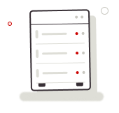

🔍
Amanda Lopes
Engenheira de observabilidade
⌄

SEU MONITORAMENTO COMEÇA AQUINenhum servidor encontrado
Crie seu primeiro perfil de servidor para começar a monitorar a performance, disponibilidade e métricas críticas de infraestrutura.
PARA INICIAR
1
Cadastre o servidor
Crie um perfil de servidor, escolha métricas e defina limites de uso.
2
Baixe o script
Geramos um .zip pronto para sua máquina.
3
Execute e monitore
Acompanhe os dados. Se algo sair do normal, você será notificado.